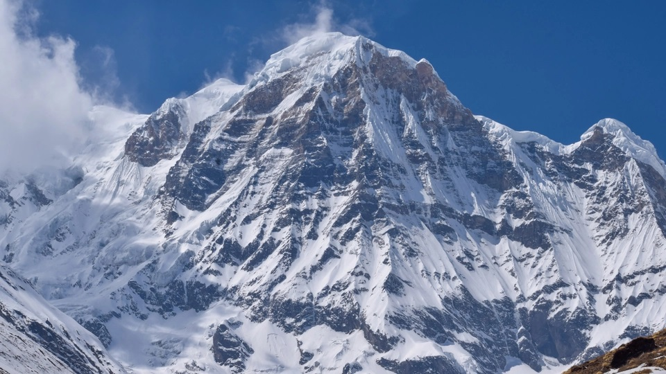

| Annapurna |
|  |
The Most Dangerous Mountain
-
Annapurna has an elevation of 8091 m., it is the tenth highest mountain in the world and also considered to be the deadliest, with a fatality rate of around 32%.
-
The mountain is situated in the Annapurna mountain range of Gandaki Province, north-central Nepal.
-
The mountain’s treacherous south face poses significant challenges, including avalanches and difficult ice and rock sections.
-
The top part of Annapurna is formed of limestone, which goes the same with Everest and Dhaulagiri I. That’s why the mountain is believed to have emerged from the ocean, gradually pushed by tectonic forces to the present state.
-
Many streams descending from the slopes of the Annapurna Massif provide water for the agricultural fields and pastures located at lower elevations.